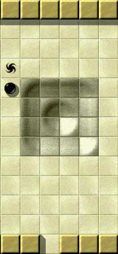
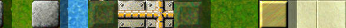
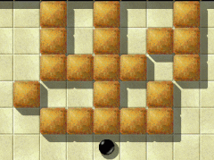
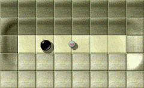
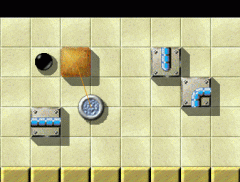
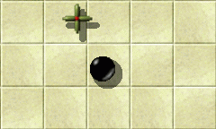
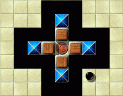
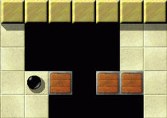
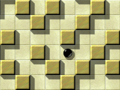

Уровень МесяцаМы хотим каждый месяц больше внимания уделять превосходным уровням. Превосходные уровни это те, у которых средняя оценка пользователей наивысшая и в целом много оценок. Следовательно это Ваш выбор. Поэтому пожалуйста оценивайте уровни, на которых Вы играете и не забывайте присылать Ваши оценки вместе с результатами в конце каждого месяца. Вы можете найти все предыдущие уровни месяца в нашем архиве. Декабрь 2007: «Temple of Gold», от Jacob Scott & Ronald Lamprecht

Enigma VII # 24 'Temple of Gold'
Водоворот древних богов Добро пожаловать, уважаемые поклонники шариков, и пожалуйста ведите себя потише, потому что мы входим в святые залы «Temple of Gold», декабрьского Уровня Месяца. Многие считают, что он существует только в королевстве волшебных сказок. Мы докажем этим скептикам, что они не правы, вместе исследовав интерьер храма, даже те комнаты, которые оставались нетронутыми (конечно из-за должного отношения к многовековым традициям этого святого места, и из-за огромной осторожности, чтобы не попасть в какую-нибудь ловушку, поставленную здесь очень давно основателями храма для отваживания непрошенных гостей). Нас будут сопровождать пара наших ребят, которые могут не только избежать опасностей храма, но и получить доступ к четырем жертвенным комнатам и там активировать святые оксидные камни. Эти смельчаки, заслуживающие восхищения, Taztunes и Craven. Также от строителей здания к нам пришел подробный отчет и удивленные Mr Jacob Scott и Mr Ronald Lamprecht в этот раз будут в роли советников по безопасности. Позже, участник Daydreamer расскажет о его наблюдениях за несколькими секретными ритуалами, проводимыми в храме.
Вместо утомительной сводки статистики, в этот раз несколько «Внеземных Знаков»: 9.25(8)9.13(8)9.11(9)9.00(5)Как обычно, Вы можете найти подробную информацию на странице архива УМа. Испытайте разнообразные загадочные ощущения!Я не могу придумать более подходящего уровня для первого юбилейного выпуска премии УМа, чем «Temple of Gold». Сейчас мы в 10й раз «более пристально присмотримся к превосходным уровням Enigma». Приближается Рождество, которое тоже можно назвать превосходным уровнем, хотя и не из Enigma, с большим акцентом на поиск, не только рождественских подарков под ёлкой, но и состояния души, когда куча хлама, собранного в течение года становится неприятным осадком от ежедневной борьбы. На этой веселой ноте, какое облегчение, давайте наконец войдем внутрь золотого храма и скроемся от внешнего мира. И, как только это произойдет, пока Вы исследуете Золотой Храм Enigma остальное не имеет значения!

Черноватый модник, шарообразный рыцарь,
На солнце и в тени, Всюду катается и поет песни, В поисках Храма Рыбы. Разрешите нам воспользоваться возможностью и вспомнить наш первый Уровень Месяца, «Island Labyrinth», еще одно великолепное творение Jacob'а. Alejandro написал о нем: «Это уровень, который размывает реальность», подразумевая то же, что я сказал о «Temple of Gold». Вот другие известные высказывания, которые можно отнести к «Temple of Gold» без единого изменения: «Мало-помалу, кусочки головоломки начинают соединяться, когда шарик исследует эту очаровательную местность» (Taztunes), «Мне кажется, что в этом уровне настоящий дух Enigma» (Ronald), «На самом деле жаль, что нельзя быстро пробежаться по этому великолепному уровню» (Ronald), «Одна из самых очаровательных характеристик этого уровня обеспечивается согласованной задумкой Jacob'а» (Andreas). Почти все игроки, хоть раз взглянувшие на «Island Labyrinth» после этого связывают стилистическую комбинацию из st-rock1, fl-water и fl-leaves с этим уровнем. Почти по той же причине значимая комбинация из st-yellow и fl-sahara тоже неразрывно связана с «Temple of Gold». Важно, что это цветовое оформление дает любому возможность испытать разнообразные загадочные ощущения, связанные с декорациями. Давайте послушаем несколько авторских слов о его работе: «Я задумал »Temple of Gold« напоминающим какой-то экзотический храм»Я посчитал, что храм, по крайней мере экзотического вида (популяризируемый множеством
приключенческих книг/фильмов) - это хорошая основа для уровня, в основном благодаря атмосфере
тайны, связанной с ним. Меня не вдохновил какой-то конкретный источник, но меня не покидало чувство интриги
и исследования обычно связанное с храмом, особенно недавно обнаруженным после давно ушедшей цивилизации,
просто ждущего, когда его обследуют!
«Temple of Gold» стал еще одной из моих попыток, как например «Elaborate»,
создать большой уровень для исследования. Мне хотелось сосредоточить внимание в уровне на исследовании различных
комнат и объектов в них, не особо беспокоясь о смерти от глупой случайности. Таким образом, я добавил
несколько ловушек, чтобы убить неосторожных игроков, наихудшая их них - медленный ротор в одной из комнат,
и оставил большинство из комнат открытыми. Реальная сложность уровня вытекает из его нелинейности,
когда абсолютно не ясно, что делать в каждой конкретной ситуации. Мне особенно нравятся эти отвлеченные головоломки, поэтому я считаю важным придумать уровень, который заставит человека переходить из комнаты в комнату и думать, вместо того чтобы для выхода из любого созданного мной отдельного испытания, сосредотачиваться только на ближайших объектах.

Indiana Marble и Маленький Круг:
Побег из тюрьмы Также я задумал «Temple of Gold» напоминающим какой-то экзотический храм
со множеством препятствий, преграждающих явные пути для исследования. По существу, я оставил большинство комнат открытыми и свободными от всего несущественного, чтобы уровень казался большим и просторным. Кроме того, я использовал только ожидаемые игроком предметы (ладно, ожидаемые типичным исследователем храмов, а не теми, которые можно найти в реальной жизни), чтобы сродниться с храмом, такие как пропасть, молоток, различные стражи и деревянные передвигаемые ящики. Вместе, эти качества должны дать игроку ощущение исследования, без опасения тривиальных угроз или решения требовательных к себе, часто встречающихся головоломок, которые могут разрушить эффект.
В общем, я вполне доволен тем, во что превратился уровень. Я считаю, он хорошо сохраняет иллюзию экзотического храма и достаточно приятен и сбалансирован, без черезчур простых и черезчур сложных частей и большим разнообразием предложенных головоломок. Он продолжает тему «Elaborate,», но в более интересной и экспрессивной
постановке. Я надеюсь все игроки Enigma, которые испытают этот уровень, найдут его приятным и исследуют так же как я.
Также я очень благодарен Ronald'у за его помощь в окончании уровня, особенно в сложном режиме.
Изначально у меня было несколько скрытых ходов, которые можно было использовать, чтобы закончить уровень быстрее, чем я планировал, а Ronald не только нашел хорошие способы исправить это, но и, чтобы дополнить уровень добавил для сложного режима новые испытания, не отходящие от тематики.
На самом деле, «сложный режим» получился «непростым» испытанием, и те игроки, которые играли, например, в «Houdini», еще один «великолепный уровень Enigma», мгновенно узнают, кто приложил руку к его созданию. За все свои попытки, они хоть что-то да увидели, ну, хорошо, давайте дадим им самим рассказать о себе: «Наверное это первый уровень, который требует абсолютно разные решения для простого и сложного режима»Я получил пробную версию этого уровня от Jacob'а наряду с почти законченными, но не названными уровнями, чтобы найти короткие пути и предложить названия. Я сразу же был очарован этим уровнем. Без скучных и тесных комнат, зато с величественными коридорами с уникальными препятствиями на пути. Исследовательский уровень без каких-либо скрытых объектов с уникальным цветовым дизайном и соответствующим обычным голубым оформлением.

Эта лошадка сослужит
мне хорошую службу, если мне удастся её оседлать! Поскольку комната справа была практически пуста, я предложил готовый экземпляр с голубой лошадью привязанной к камню золотисто-шоколадного цвета. Это отлично закрыло существовавшую дыру и добавило головоломку.
Но все еще оставалась нерешенной задача найти и исправить на всем уровне короткие пути.
Моим решением было добавление золотой головоломки вокруг одного из наборов синих оксидов. Но я все еще был недоволен
левым и нижним набором оксидов, которые были абсолютно незатейливыми. Мне действительно понравилось подбирать
различные испытания к каждому набору оксидов.
Но последние два испытания требовали уже другого сценария. Решением было предложить два режима.
Упрощенный, с обычным сценарием, состоящем из нескольких добавленных испытаний. И сложный режим, добавляющий новые испытания и абсолютно другой сценарий. Наверное это первый уровень, который требует абсолютно разные решения для простого и сложного режима - Вы должны сыграть в каждый из них!
К несчастью даже несколько пар глаз пропустили один ловкий короткий путь. Пользователь «Moneymaker» прислал нам отчет. Но судя по результатам игроков, было очевидно, что никто кроме него еще не нашел и не воспользовался этим коротким путем. Исправление вышло простым и незаметным. Несомненно, оно будет включено в следующую версию Enigma.
Внимательный читатель может вспомнить, что имя «Moneymaker» уже упоминалось в списке рекордов. Промчавшись по всем, и Серебрянному, и Золотому Храмам, на невероятно быстрой скорости, он мог бы устанавливать рекорды до бесконечности, но смею Вас заверить, он не захотел той таинственной сенсации, которую предлагает храм внимательному исследователю! Читатель, интересующийся таблицами и статистикой, может узнать больше о «Michael'е Schumacher'е» Формулы Enigma на странице статистики результатов. На вершине текущей «статистики решенных уровней» он также найдет имена тех отважных исследователей, которые вернулись победителями из Золотого Храма и согласились рассказать Энигмианцам о своих приключениях. Taztunes и Craven, вам слово! «Один реально возможный путь из сотен!»

И, когда его сила уже довольно иссякла,
Встретил он паломника ротора. «Ротор», сказал он, «Где могут быть - эти оксиды Templo Dorado?» В этом уровне есть всего понемногу: опасные проходы, по которым Вы должны умело маневрировать, и прежде всего сложные загадки, которые снова и снова приводят Вас к краю отчаянья.
У меня не было особых проблем с упрощенным режимом, потому что в большинстве комнат довольно ясно, что нужно сделать. Единственная преграда, которую Вы можете увидеть на скриншоте, казалась неразрешимой, пока я наконец не нашел верный «ключ».
Поэтому я был, очень оптимистично настроен на сложный режим, только для того, чтобы обнаружить, что изменилось гораздо больше вещей, чем я ожидал: оксиды оставались на тех же местах и основной путь решения уровня оставался тем же, но было еще и несколько неприятных сюрпризов, как например внезапно появляющиеся платформы или кажущиеся открытыми двери, которые все же не позволяли мне передвигать через них камни (я уже сталкивался с таким в «Houdini»!).
Хотя существуют сотни способов преодолеть загадки, из них реально возможен только один и риск неудачи чрезвычайно высок, поэтому я хорошо понимаю, почему всего несколько людей решили этот уровень. Хотя, Вам не нужно быть в «Temple of Gold» таким же ловким как в «How Many Spirals?» или, безусловно, «The Aztec Temple» этот уровень определенно заслуживает повторной попытки.
«Я люблю эти большие протяженные уровни»Одна из самых интересных сторон Temple of Gold для меня - парадоксальная необходимость одновременно и избегать того, чтобы ротор Вас разорвал и заставить его сослужить службу для Вашего шарика, потому что без способности ротора летать через пропасть Вы не получите Вашу первую монету, а без сильного желания ротора догнать Ваш шарик не сможете войти в одну из комнат с оксидами. Все остальные роторы этого уровня злые, но Вам нужно обуздать первый ротор, чтобы он выполнял Ваши приказы, иначе все Ваши попытки обречены на провал.

«За золотыми полями, далеко на юге,
По ту сторону Пропасти Ротора! Просто не расставайся со мной», ротор ответил - «Если ищешь первый оксид Templo Dorado!» Другой судьбоносный момент этого уровня для меня тот, который включает перетаскивание, с помощью различных объектов-посредников шарика, кусочков головоломки через пропасть (первый - 'лошадь' и второй - 'жук'). Я нашел жука с меньшими размерами и немного более сложного в управлении. Вам нужно просто верно рассчитать силу или Вы провалитесь в пропасть, а жук может остаться порхать над пропастью, навеки оказавшись в недосягаемости.
Я люблю эти большие протяженные уровни - у Вас множество объектов - монеты, вишни, заготовки ящиков, молоток - чтобы собрать их по комнатам и затем использовать в других отдаленных местах. Вам прийдется искать творческие пути, чтобы узнать, что если Вы используете деревянные ящики для достижения своей цели, то этого не хватит для того, чтобы пересечь пропасть на пути к крайним справа оксидам.
Я вспоминаю, как сначала исследовал Temple of Gold и нашел различные подходы, к тому как мне собрать все мое снаряжение, а потом исследовал, как все компоненты вместе взятые позволят мне добраться до различных кажущихся недоступными оксидов. А в ноябре я вернулся в Temple of Gold, чтобы снова насладиться исследованием его секретов.
Я советую всем для начала попробывать пройти упрощенную версию уровня. Это послужит отличным уроком по географии. Я конечно же надеюсь, что к концу декабря еще больше либителей шариков последуют за нашей пятеркой в это очаровательное приключение!
Кстати, существует способ так разместить деревянные ящики, что не будет необходимости в жуке над пропастью. Главная тема золотого приключения …… это кажется правильное использование деревянных ящиков и их заготовок. Запасы дерева строго ограничены и, если Вы не будете действовать мудро, то скоро почувствуете дефицит дерева. Довольно интересно, что кроме «короткого пути», упомянутого ранее Ronald'ом, оба наших одаренных исследователя, кажется, нашли в некотором роде «обходной путь». Без достаточного для постройки моста количества деревянных ящиков, они передвигали части головоломки через пропасть, управляя жуком. Craven посоветовал мне поэкспериментировать с этим решением перед тем, как найти «короткий путь». Соответствующий вступительный уровень о правильном использовании заготовок для деревянных ящиков и самих ящиков - это «Growing Boxes» (II/21). Игрок должен понять «разрушительную» силу семени, чтобы «добиться успеха». Этот уровень также хорошо демонстирует функциональность мостов. Открытый мост узнаваем и выглядит как пропасть. Когда толкаешь на него ящик, мост закрывается и автоматически открывается заново, когда ящик снова сдвинут. Таким образом, в этом случае деревянный ящик не падает, если передвинут на то, что напоминает пропасть. Для решения играет решающее значение знание того, что рядом с определенным оксидом существует (несколько) мостов. А еще есть способ … Ладно, я больше ничего не скажу, чтобы не испортить Вам ощущения от исследования. Но попробую предсказать, что с таким запасом знаний, в начале нового года, еще больше игроков захотят посетить «Temple of Gold»

Еще одна заготовка для деревянного ящика не помешает!
Если Вам нужна более углубленная информация, как всегда в этом случае, форум «mag.heut.net» подходящее место. Насколько я помню, пользователь «Hairball» начал ветку в английском разделе Tips & Tricks. Как это любит делать Ronald, предлагаю другие познавательные и развлекательные уровни, где игрок противостоит препятствиям, чтобы мудро использовать семена и деревянные ящики - это Seed Puzzles I & II (IV/71&74), тоже написанные Jacob'ом. И, конечно мне вспоминается «Tool Time», наш Уровень Сентября, в котором расположение семени в правильном месте, тоже главная тема. Но основой для таких технических знаний - настраивание мыслей игрока на логику уровня, который он хочет решить. Разум - поле возможностей. Если его правильно возделывать, игрок соберет большой урожай плодов знаний, например он узнает все о door_b в храме, не ища священных кодов - или может попробует горькую пилюлю? Если поле обрабатывать неправильно, игрок прогонит свой шарик по самым живописным и изумительным местам без понимания чего-либо, как если бы он прокатился по какой-нибудь беконечной пустыне, где повсюду только fl-sand(пески), и лишь изредка шарик спотыкается об st-rock1. Наш товарищ Daydreamer вернулся к нам из внутренних помещений золотого храма и рассказал нам об очень странном, хотя и поучительном случае, за которым ему представился шанс наблюдать: Призыв Кодекса Абсолютной Золотой МудростиОн рассказывает о том, что даже самый дикий и безжалостный зверь, ужасный быстрый гигантский ротор-кролик, может быть приручен, если самым посвященным шариком правильно прочесть священные песнопения, двадцать пять раз сделав вокруг него золотой круг. Также он рассказывает о том, что если четыре из таких прирученных бестий начнут танцевать вокруг четырех оксидных алтарей и присоединятся к пению священных псалмов святого золотого молота, то даже эти голубые псевдо-камни озарятся и их ярко-золотистое сияние озарит все залы храма, а из пустоты комнаты, где хранится золотой молот появится Кодекс Абсолютной Золотой Мудрости, и эта картина предстанет перед истинно посвященным искателем вечных правил Золотого Пути Решения Уровней. Золотой Путь Решения Уровней …… это объединение глаз, разума и мыши - объединение Вашего собственного
интеллекта с интеллектом создателя уровня, которые в уровне гармонично сочетаются.

Последователи золотого пути
не заблудятся в золотом лабиринте! Золотой Путь Решения Уровня - состояние, в котором стихии и силы, которые образуют Ваш организм находятся в гармонии со стихиями и силами, которые образуют логический организм уровня. Оставаясь в этом состоянии, Вы испытаете повышение эмоционального, психологического и душевного состояния и в большей степени ощутите стихийное просвещение оксидов уровня.
Если Вы продолжите следовать Золотому Пути Решения Уровней, все Ваши тревоги и даже Ваши худшие кошмары уйдут прочь и Вы ощутите чувство беззаботности и радости. Это спонтанный расцвет интуиции, проницательности, воображения, творчества, выразительности и намерения.
Золотой Путь Решения Уровня не враг духовного пробуждения, а скорее потенциально полезный друг. Декабрьский Уровень Месяца откроет нам таинственную, нездешнюю территорию, где все мгновенно приходит в соответствие всему остальному. Где fl-sahara и st-yellow, fl-abyss и st-wood, fl-bridge-open и st-wood,
it-trigger и st-brownie, st-door_b и it-seed, it-hammer и
st-rock3_break, it-coin1 и st-coinslot, ac-rotor и it-cherry,
ac-blackball и ac-bug выливаются в поле ясных возможностей.
«Temple of Gold» - царство, где потенциал всего, что было, есть и даже будет в мире Enigma,
обнаруживается и видоизменяется в игроке и уровне, любитель шариков и шарик, искатель оксидов и оксид.
Эти слова мудрости переданы нам нашим благородным исследователем Daydreamer'ом, который сообщил, что своими глазами видел эту небывалую церемонию. Но подчиняясь усыпляющему эффекту этой литургии он уснул и не застал окончания истории. Наверное каждый бы уснул в такой странной и волнующей обстановке, которую «Temple of Gold» представляет внимательному исследователю. Но, я надеюсь, этот - хм - забавный рассказ оказал свой эффект на кого-то из читателей, заинтересовав его в самостоятельном исследовании тайн храма. Должен сказать, что эта золотая звезда искусств, составляющих уровень ярко заблещет в бесконечности Рая Enigma. В январе не будет «Уровня Месяца», из-за награды «Уровня Года», а значит не будет и статьи об УМе. Также не будет специальной статьи об УГа, потому что это будет один из 10 «великолепных» уровней месяца, которые мы уже «внимательно рассмотрели». Итак, до встречи в феврале, когда мы в 11 раз скажем: «Мы хотим каждый месяц более пристально присматриваться к превосходным уровням Enigma…» Всего хорошего, дорогие любители шариков, и IV/2, |